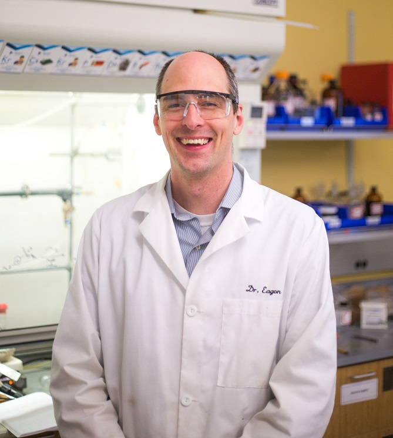

|  | Dr.
Scott C. Eagon, Ph.D.
Department of Chemistry &
Biochemistry Current CV |
| Books: Lord of the Rings Trilogy, J. R. R. Tolkien Dune, Frank Herbert Lord of the Flies, William Golding |
Chemical Reactions: Borohydride reductions Suzuki Couplings Grignard reaction |
| Video Games: Spec Ops: The Line Dead Space 1 & 2 NieR: Automata Final Fantasy 7 The Last of Us |
Movies: Lord of the Rings Trilogy Aliens Terminator 2 Star Wars (IV-VI) Harry Potter |
| Animated Series: Ghost in the Shell |
Element: Boron |